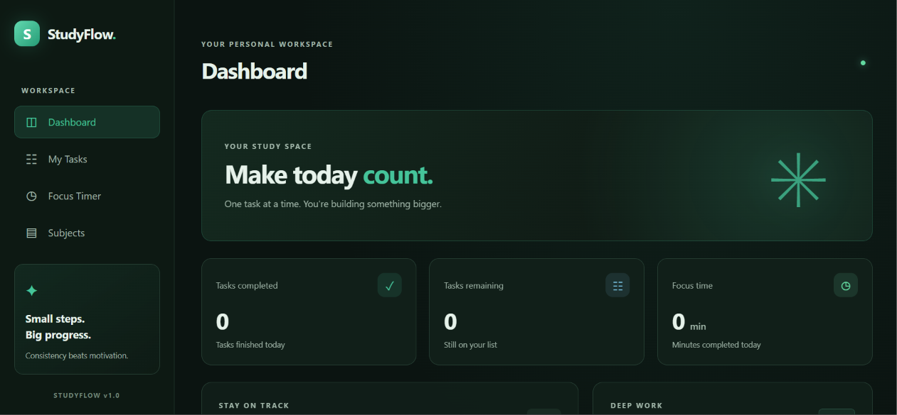
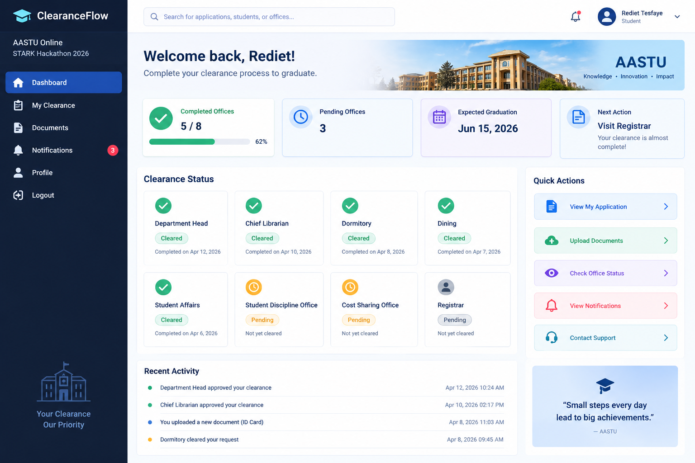

StudyFlow — Study Dashboard

A front-end practice project built with HTML, CSS, and JavaScript.
- Key features:
- Study task organization
- Subject progress tracking
- Dark green visual theme

A front-end practice project built with HTML, CSS, and JavaScript.

A team project concept intended to make student clearance easier to track across university offices.
This six-page website is a practice project for semantic HTML, navigation, tables, multimedia, and forms.